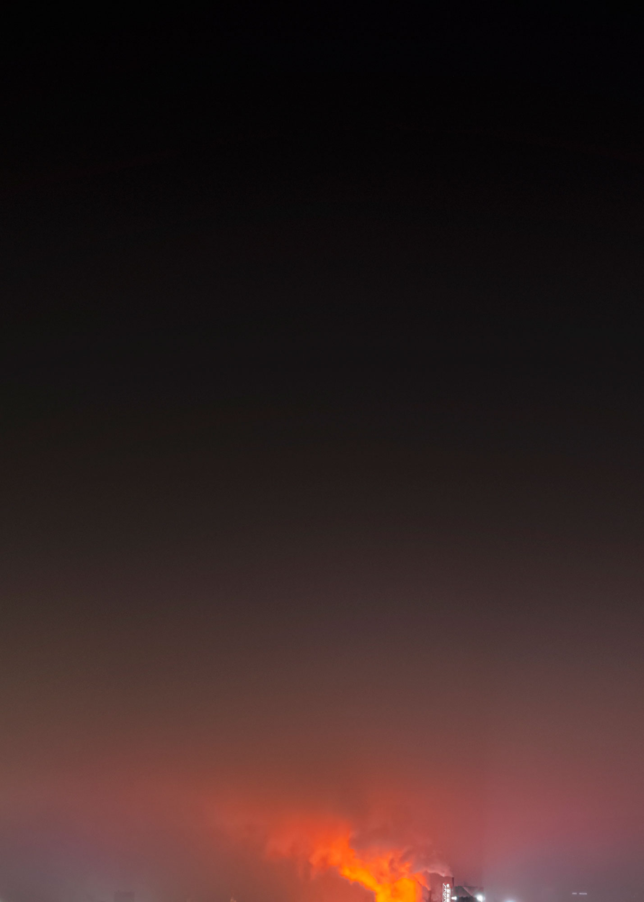
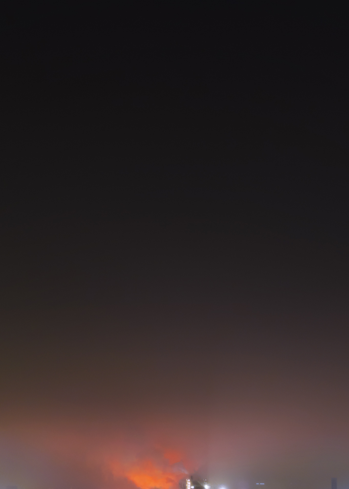
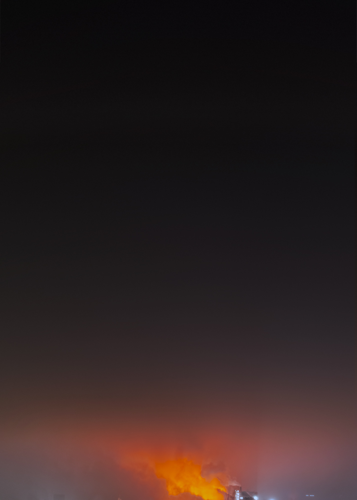
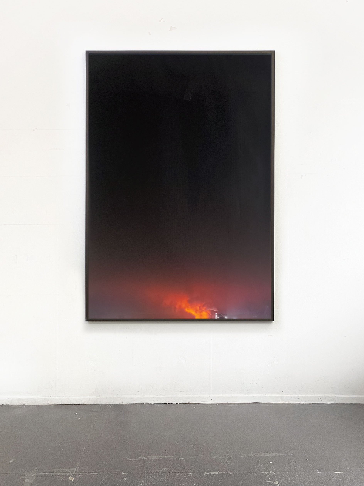
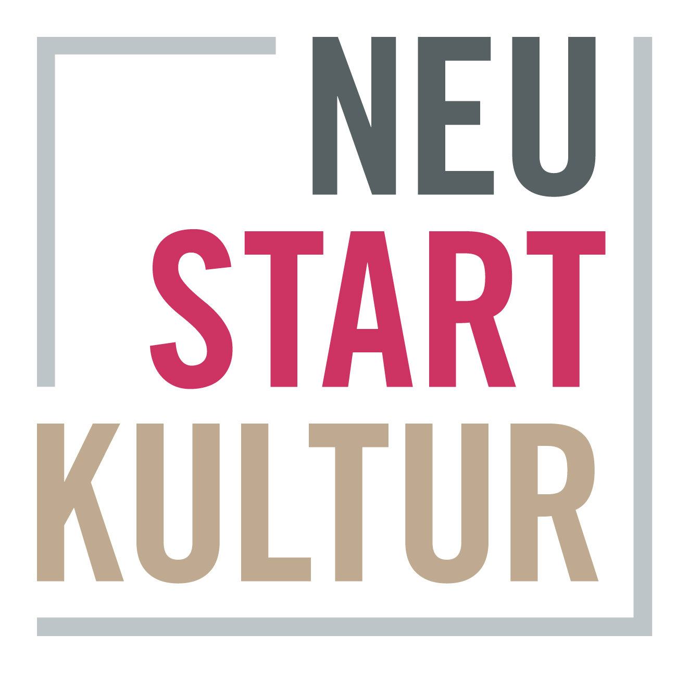
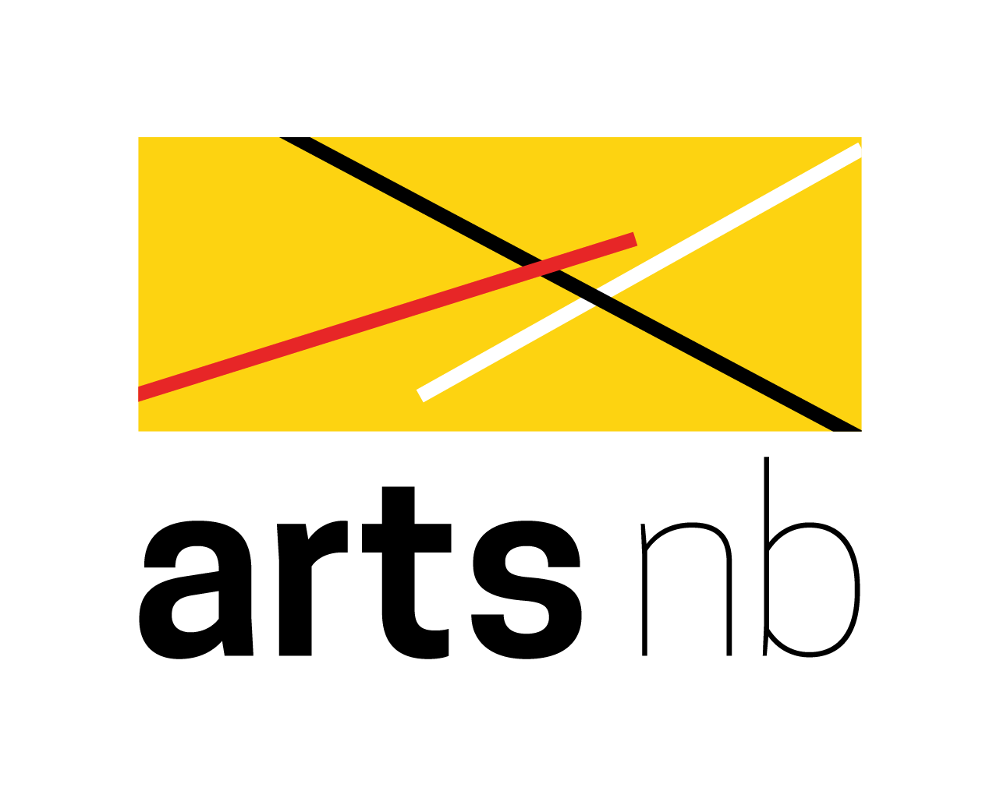

Jessica Arseneau




Aurora 2, Aurora, Aurora 3, Aurora 4, 2022
Archival pigment prints
175 x 125 cm

Studio view
The soft gradient and the smoke in Aurora show the brief moment when a steel plant in Duisburg lights up the night sky in Germany’s Ruhr region. The subtle glow of the sky occupies most of the image’s surface, emphasizing the light pollution that makes the work nearly minimal.
Aurora is the name of the goddess of dawn in Roman mythology. When the first light of dawn becomes visible, she announces the sun’s arrival. Between the romantic notion of a reddish sky at sunrise and the image’s reality, Aurora is also a reflection on the illusion of permanence and what seems inexhaustible.
"In her work, the Canadian artist Jessica Arseneau explores our perception, shaped by technological progress, and the insomnia that often results as a consequence of permanent acceleration in a world that functions around the clock. In her photograph "Aurora" she has captured the brief moment when the steel tap of the metal industry illuminates the sky of the Ruhr region. The sky, illuminated red in the lower third of the picture, which becomes darker and darker towards the top and finally spreads into impenetrable black, emphasizes the unsettling atmosphere created by the flickering brightness. Through the ever-burning stoves, the glow of light can also be seen day and night; the ever burning glow of fire in the landscape can thus be seen here metaphorically for a frenetic human activity — beginning with the first fire that has since allowed humans to manipulate the natural day-night/light-dark rhythm, allowing it to continue restlessly, even though both humans and the landscape have long since needed a rest." [Transl.: Jessica Arseneau]
Ann-Katrin Günzel, Exkurse, KUNSTFORUM International, issue 284: Arkadien in der Krise, 2022
Thanks:
Kara Handgraaf, Falk Messerschmidt, Felix Möser, Brad Todd, Ringlokschuppen Ruhr and Urbane Künste Ruhr

